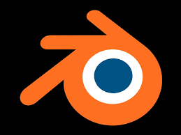
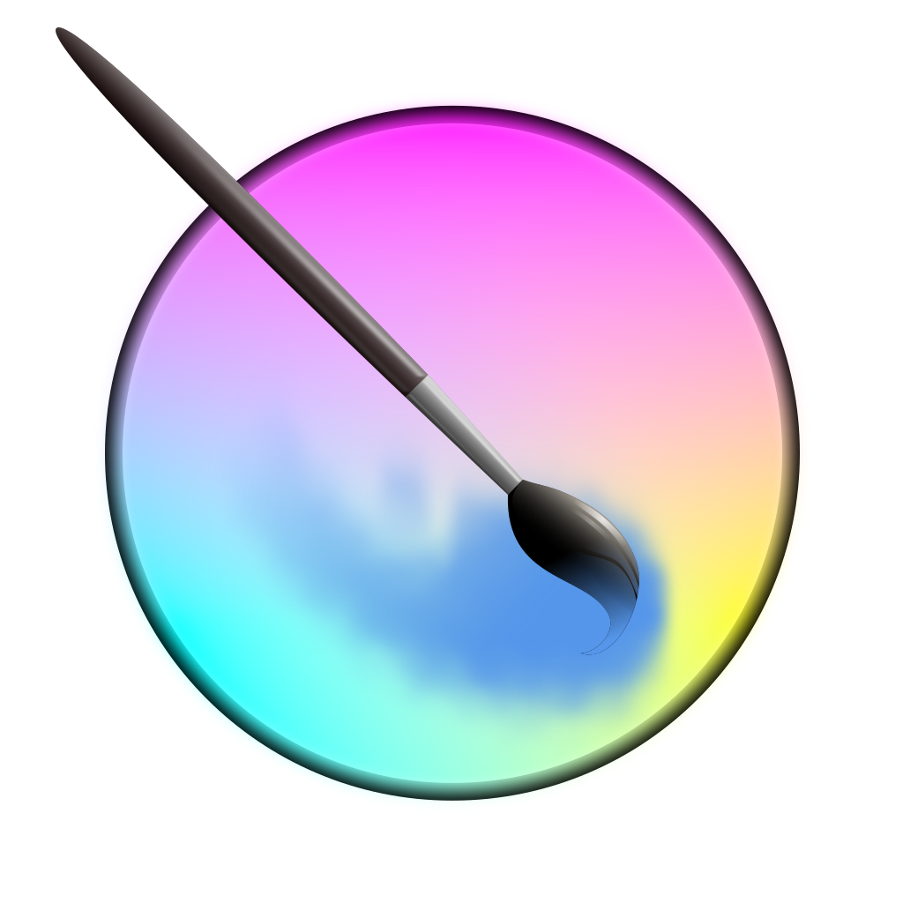
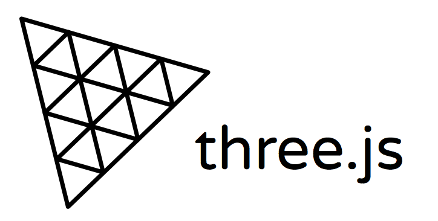
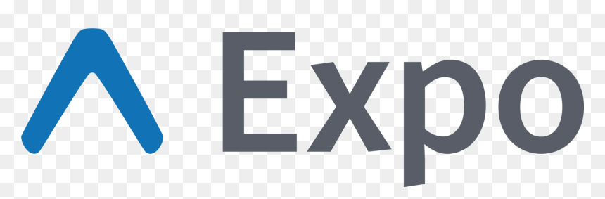
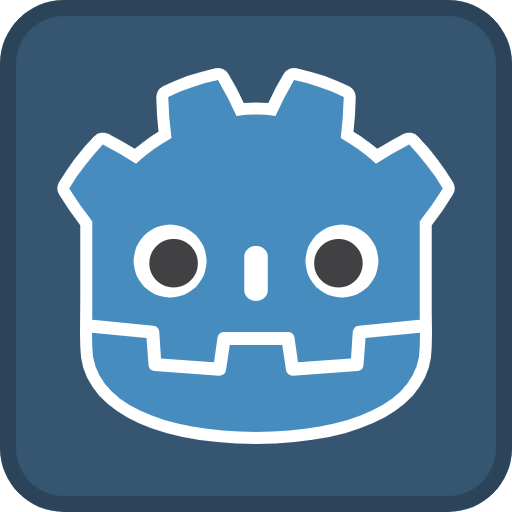

Benvenuti su Ed 1628 EP Art Studio
Ed 1628 EP Art Studio è un progetto personale dedicato alla creazione di opere d'arte digitale. Il nostro obiettivo è esplorare nuove forme di espressione artistica attraverso l'uso di tecnologie digitali e software di grafica avanzata.
Il nostro studio si concentra su una vasta gamma di stili e tecniche, dalla pittura digitale alla modellazione 3D, dalla grafica vettoriale all'animazione. Siamo appassionati di sperimentazione e innovazione, e ci impegniamo a creare opere uniche e originali che riflettano la nostra visione artistica.
Il mio archivio è spesso pubblico. Che si tratti di uno script in JavaScript, di uno shader per un gioco o di un'illustrazione digitale, preferisco che il mio lavoro sia un punto di partenza per gli altri piuttosto che un punto di arrivo per me stesso. Contribuire a progetti collettivi è la mia più grande fonte di apprendimento.
I nostri progetti
Nel corso degli anni, abbiamo svolto studi su diversi progetti di sviluppo web e gaming, spaziando dal web developing con Three.js a React.expo, continuando la nostra avventura in diversi motori grafici, il tutto in uno stack opensource, dalla grafica 3D in blender al famoso Krita per texture accattivanti e personalizzate.





Collaborazione e sostegno culturale
La cultura come motore creativo
La cultura è il motore della nostra creatività. Crediamo che l'arte e la cultura siano fondamentali per lo sviluppo personale e collettivo, e ci impegniamo a promuovere iniziative culturali che stimolino la creatività e l'innovazione.
Si può tutto anche solo con l' aiuto di una parola di conforto, quersta è la nostra filosofia di sviluppo e creatività, non è di obbligo stare ai canoni del buisness per poter avere competenze in materia.
Hai un'idea per un progetto open source? Stai sviluppando un gioco indie e ti serve una mano o un confronto? Oppure vuoi semplicemente scambiare due righe sul futuro del web libero?